Protect one logical qubit with five physical qubits.
Exploration report: from encoding to threshold.
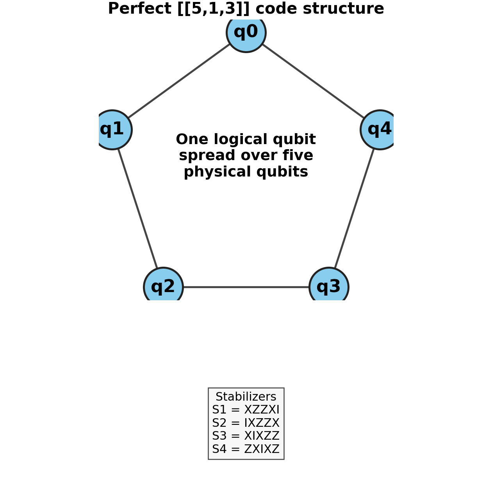
Bit flips ($X$), phase flips ($Z$), and combinations ($Y$) destroy superposition. Without protection, decoherence and gate noise erase quantum advantage.
We cannot copy $|\psi\rangle = \alpha|0\rangle+\beta|1\rangle$. Instead, QEC spreads the state across entangled physical qubits: $|\psi_L\rangle = \alpha|0_L\rangle+\beta|1_L\rangle$.
Stabilizer measurements reveal which error occurred — without collapsing the logical information.
S1 = X Z Z X IS2 = I X Z Z XS3 = X I X Z ZS4 = Z X I X Z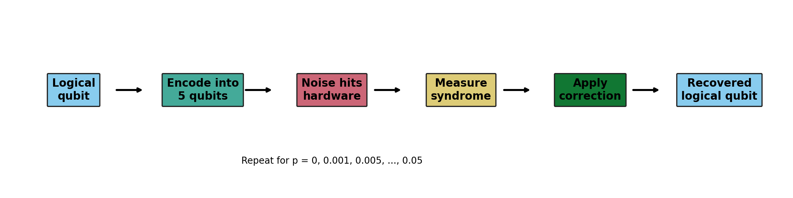
▶ Exploration insight: The code saturates the quantum Hamming bound: $2^{n-k} \ge \sum_{j=0}^{t} 3^j \binom{n}{j}$. For $n=5, t=1$, LHS=16, RHS=16.
All 15 single-qubit Pauli errors ($X_i, Y_i, Z_i$) produce distinct syndromes, enabling perfect identification.
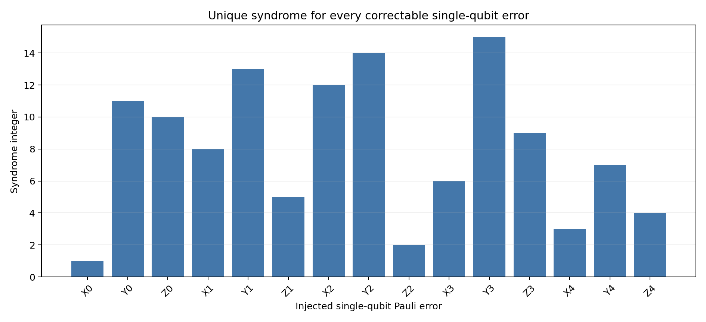
Encoding → intentional error → stabilizer measurement → syndrome → correction.
X, Y, Z errors on each qubit tested.
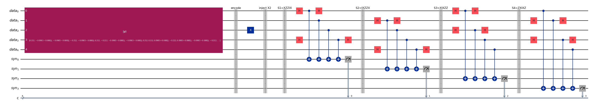
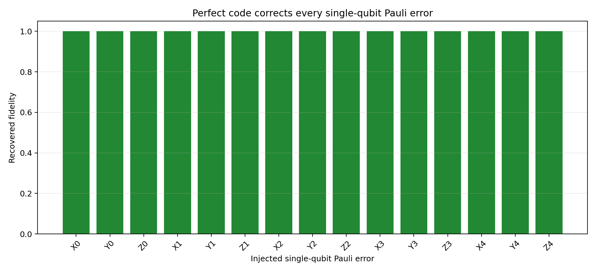
Physical error rate $p$.
Crossing point (pseudothreshold) ~ $0.13755$ for one round.
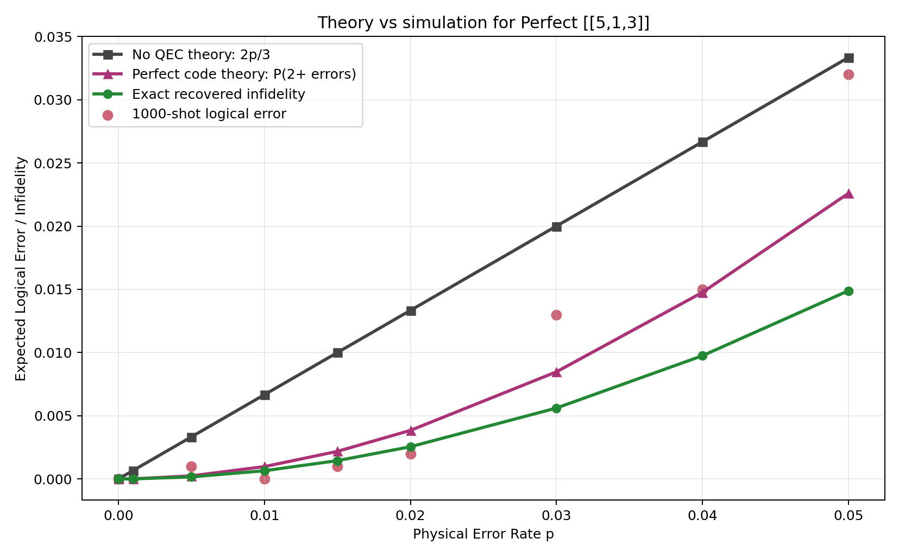
1000 shots per $p$, depolarizing noise. Below pseudothreshold, QEC helps.
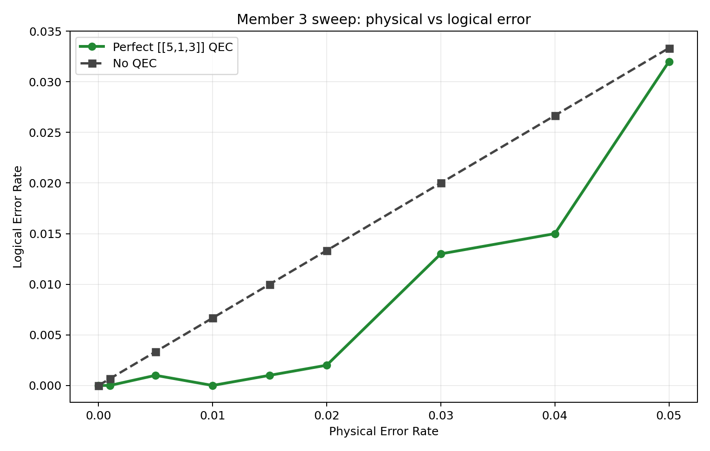
Below crossing, logical error < physical error. Above, multi-error events dominate.
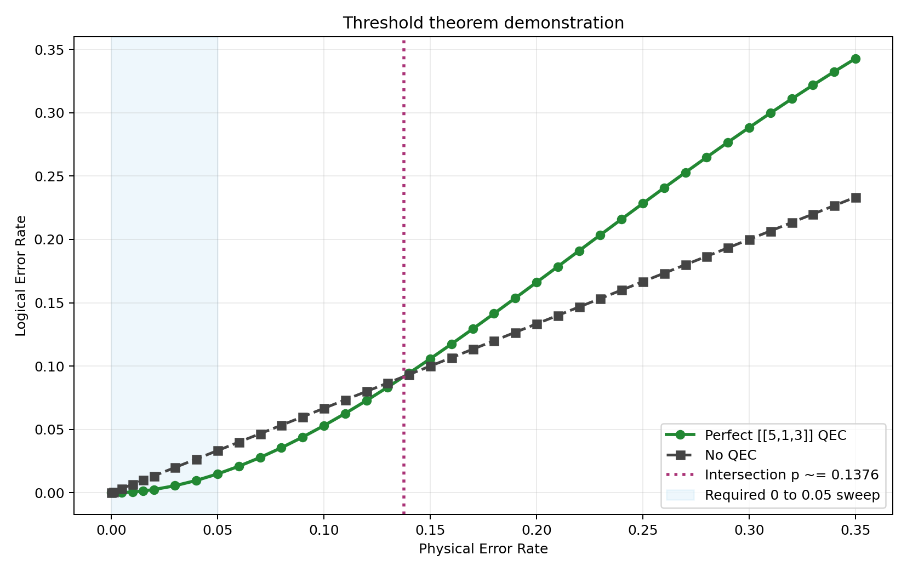
Perfect code shines when qubits are scarce and $p$ is low enough that two‑error probability is small.
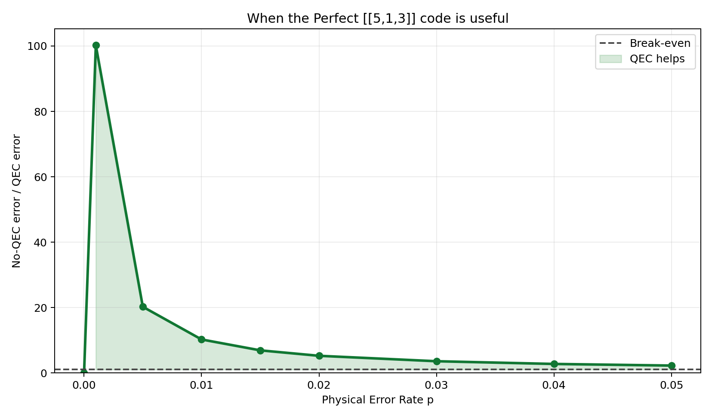
Perfect, Shor, Steane, Bacon-Shor. (Proxy curves until teammate data integrated.)
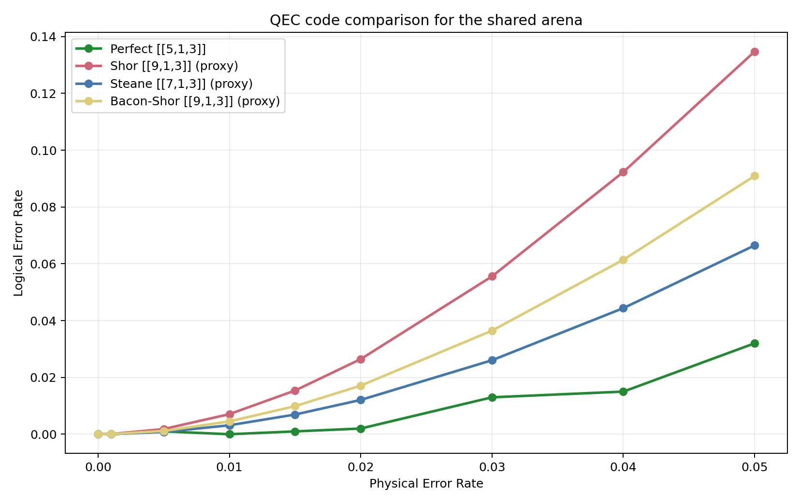
Increasing distance $d$ exponentially suppresses logical error, at cost of more qubits and rounds.
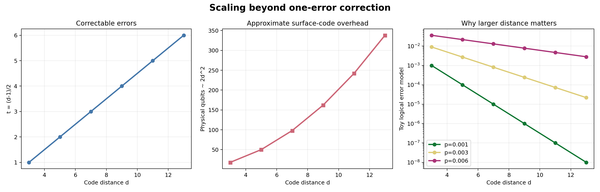
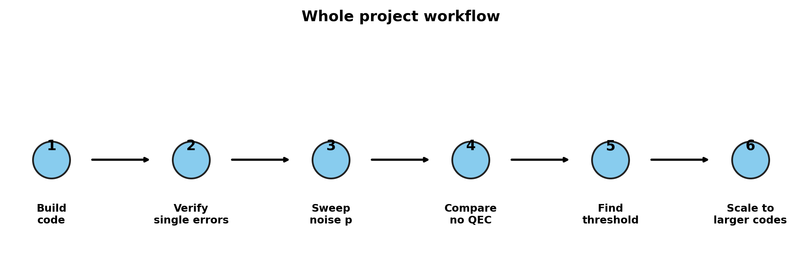
The code space is the +1 eigenspace of stabilizers $S_i$. Any Pauli error anti-commutes with a subset, yielding a binary syndrome.
$[S_i, S_j]=0$ and $-I \notin S$. The [[5,1,3]] stabilizers generate a group of order 16.
$X_L = X X X X X$ (weight 5)
$Z_L = Z Z Z Z Z$
They commute with stabilizers and define the encoded qubit.
Goal: demonstrate that even the smallest code provides a building block for large‑scale fault tolerance.
Detect and correct a physical error without destroying logical quantum information.